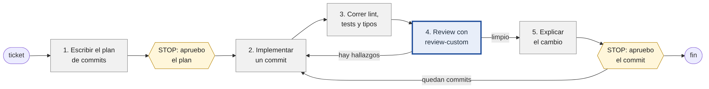

Se construyó un revisor de código con siete agentes en LangGraph y se comparó con un revisor de un solo agente, usando el mismo modelo y los mismos casos de prueba, tres veces cada uno. En 14 cambios pequeños, el sistema de siete agentes encontró los 14 problemas y el de un agente 12.3, pero usando 5.3 veces más tokens. En tres cambios más difíciles la diferencia fue mayor (13.7 contra 8.7 de 14). Sin embargo, un solo agente con mejores instrucciones y un nivel medio de razonamiento llegó casi al mismo resultado con muchos menos tokens. La conclusión es que conviene ajustar primero un solo agente y añadir más agentes solo donde una medición muestre que ayudan.
En mi trabajo programo con Claude Code, un asistente de programación que funciona en la terminal: uno le pide una tarea y el asistente lee el código, ejecuta comandos y propone cambios. Claude Code permite escribir skills. Una skill es un archivo de texto con instrucciones paso a paso que el asistente sigue cuando se la invoca por su nombre. No es código, es una receta escrita en prosa. Yo escribí varias para mi trabajo diario, y tres de ellas son el punto de partida de este taller:
| skill | para qué la uso | qué pasos tiene |
|---|---|---|
dev-cycle | Implementar un ticket de principio a fin | Escribe un plan de commits y espera mi aprobación. Después, por cada commit: implementa, corre lint, tests y tipos, hace un review, me explica el cambio y espera mi aprobación antes de hacer el commit |
review-custom | Revisar mis cambios antes de un commit o un PR | Lee el diff y el código alrededor, revisa bugs, reglas del proyecto, estilos, código sin uso y otras dimensiones, verifica cada problema antes de reportarlo y entrega un informe |
review-comments | Resolver los comentarios que me dejan en un PR | Clasifica cada comentario, verifica si el problema es real, aplica los arreglos que apruebo y redacta las respuestas |

Estas skills funcionan, pero al ser una receta que sigue un solo agente tienen tres límites:
| límite | qué pasa hoy | qué haría falta |
|---|---|---|
| El flujo vive en el prompt | Los pasos y los puntos de "STOP: pedir aprobación" son instrucciones. Que se cumplan depende de que el modelo las obedezca. | Que el orden y las pausas estén en código. |
| Un solo agente hace todo | El mismo agente que escribe el código lo revisa, con toda la conversación de cómo lo escribió delante. | Que quien verifica no haya visto cómo se llegó al hallazgo. |
| Un solo proveedor | Las skills solo corren en Claude Code, con los modelos de Anthropic. | Poder cambiar de modelo sin reescribir nada. |
El objetivo final es llevar dev-cycle completo a un grafo de LangGraph. Este taller es el primer paso: toma un solo paso de ese ciclo, el review (el paso 4 de la figura, que hoy lo hace review-custom), lo construye como sistema multiagente independiente del proveedor y, sobre todo, lo mide contra la versión de un solo agente. La pregunta del taller es la misma que deja planteada el curso: si repartir el trabajo entre varios agentes mejora el resultado, y cuánto cuesta.
Un programa que recibe un parche (el diff de un cambio, con su descripción) sobre un repositorio y devuelve un informe de review. Los hallazgos salen en una ficha fija: archivo, línea, dimensión, severidad, la línea de código copiada como evidencia y, si aplica, la regla que se incumple.
| requisito de la opción libre | cómo se cumple |
|---|---|
| Al menos 5 agentes | 7: cinco reviewers (bugs, reglas, clean code, eficiencia, impacto), un verificador y un sintetizador |
| LangGraph y la H200 | langgraph==1.2.12, la versión del laboratorio. La H200 es el proveedor por defecto |
| 3–4 herramientas | 4: leer_archivo, grep_repo, buscar_reglas, correr_checks |
| Una de ellas RAG | buscar_reglas: recuperación por embeddings sobre las reglas del repo y documentación descargada |
| pieza | ruta | modelo | leído el |
|---|---|---|---|
| LLM de todos los agentes | H200 de la USFQ, vLLM en el puerto 12555 (VPN GlobalProtect) | zai-org/GLM-5.3-Flash, leído de /v1/models | 2026-10-03 y 2026-10-04 |
| Embeddings del RAG | H200 de la USFQ, Ollama en el puerto 11434 | bge-m3:latest (1024 dimensiones) | 2026-10-03 |
El id del modelo no está escrito en el código: revisor/config.py lo pregunta al endpoint. Todas las corridas medidas usan ese único modelo y el costo fue 0 USD. El sistema no nombra al proveedor en ningún otro sitio: cambiar a otro es editar .env, y un modelos.toml opcional permite darle a un rol concreto un modelo distinto. Tampoco nombra el lenguaje del repositorio revisado: los comandos de lint, tests y tipos, y qué archivos mirar, se leen de un perfil.toml que vive en ese repo.
El repositorio que se revisa (repo-prueba/) es una mini tienda en TypeScript hecha para el taller: carrito, descuentos, inventario y pedidos, con 40 tests y 16 reglas numeradas en su CLAUDE.md. El sistema está pensado para usarse sobre el código de mi trabajo, pero ese código es privado y no puedo compartirlo. Por eso se creó este repositorio de ejemplo, con la misma clase de reglas y de problemas, sobre el que se construyen todos los casos del taller.
El trabajo no salió al primer intento. Se siguió la regla del curso de hacer un baseline, medirlo, extenderlo y volver a medir, y casi todas las mediciones obligaron a cambiar algo. La tabla resume ese recorrido en orden, y el resto del informe sigue ese mismo orden.
| paso | qué se hizo | qué mostró la medición | qué se cambió por eso |
|---|---|---|---|
| 1 | Parte 0, antes de construir | El modelo gastaba todos sus tokens razonando y devolvía una respuesta vacía | Se limitó el razonamiento y se añadió un reintento |
| 2 | Primer diseño, con cuatro dimensiones y un RAG de 12 reglas | Faltaban clean code y eficiencia, y con tan pocas reglas el RAG casi no hacía falta | Cinco dimensiones y un índice de 206 fragmentos con documentación descargada |
| 3 | Baseline y golden set de 14 casos | 11 de 14. Fallaba en código sin uso, eficiencia e impacto | Se escribieron los cinco reviewers pensando en esos fallos, lo cual fue un error que se corrige en el paso 6 |
| 4 | Sistema multiagente | 11 de 14, porque el paso de unir perdía hallazgos | Se corrigió el paso de unir y dio 14 de 14 |
| 5 | Ablaciones sin verificador y sin RAG | Sin RAG salían corridas incompletas | Era por los prompts, que seguían pidiendo una herramienta que ya no existía. Se corrigieron |
| 6 | Revisión de la forma de medir | Los reviewers tenían mejores instrucciones que el baseline, y cada sistema se había medido con una versión distinta del código | Un control con un agente único y las mismas instrucciones, y una medición final con el mismo commit |
| 7 | Medición final | El mismo baseline dio 13 en vez de 11 | Tres corridas por sistema |
| 8 | Casos más difíciles | El multiagente sí se separa del baseline, pero tarda demasiado | Se encontró que el tiempo se iba en llamadas vacías y se pusieron límites |
| 9 | Razonamiento medio | Un solo agente encuentra casi lo mismo que el multiagente | Cambió la conclusión del taller |
Los casos de prueba también fueron cambiando. Los 14 casos pequeños sirvieron para ver en qué fallaba el baseline, pero después casi todos los sistemas los resolvían y ya no permitían diferenciarlos. Los dos PR grandes bajaron un poco al agente único. El caso que más sirvió fue el último, el complejo, porque fue el único donde los sistemas se separaron con claridad.
La opción libre no trae los scripts del laboratorio, así que se escribieron tres equivalentes para un revisor de código (evaluacion/parte0/). La 0.b y la 0.c no usan ningún modelo.
El modelo recibe un diff con un bug y nada más: ni herramientas ni las reglas del repo. Se le pide un review con citas y después el código comprueba cada cita contra el repositorio. Se corrió con dos niveles de razonamiento.
================ razonamiento: low
modelo: zai-org/GLM-5.3-Flash
hallazgos devueltos: 0
citas comprobadas: 0 · falsas: 0
excepciones: 0 · el modelo respondió con normalidad y el formato era válido
tokens: {'tokens_entrada': 628, 'tokens_salida': 72}
================ razonamiento: high
modelo: zai-org/GLM-5.3-Flash
hallazgos devueltos: 3
--- hallazgo 1: src/pedidos/pedidos.ts:24 regla 'money-no-magic-numbers'
[FALSO] la regla existe con ese id
[FALSO] el texto de la regla es literal
[FALSO] existe el archivo afectado src/pedidos/impuestos.ts
(...)
citas comprobadas: 19 · falsas: 10
excepciones: 0 · el modelo respondió con normalidad y el formato era válido
tokens: {'tokens_entrada': 628, 'tokens_salida': 833}
Con razonamiento bajo el modelo devuelve cero hallazgos aunque el cambio tiene un bug, y una respuesta vacía con el formato correcto se lee como "todo está bien". Con razonamiento alto sí ve el bug, pero inventa las reglas que cita y algunos de los archivos afectados (se muestra solo el primero de sus tres hallazgos). Por eso el sistema necesita herramientas para leer el código, un RAG para consultar las reglas y comprobaciones en código que revisen que lo citado existe. Hay que tomar en cuenta que en esta prueba el prompt le pide al modelo citar reglas que no puede conocer, así que lo empuja a inventar.
fragmentos indexados: 19 (solo reglas del repo, TF-IDF, sin modelo)
reglas que aplican al cambio: ['R12', 'R14']
consulta con el código del diff: 'const impuestoCentavos = Math.round(subtotalCentavos * 0.15);'
R9 similitud 0.000
R8 similitud 0.000
R7 similitud 0.000
reglas correctas recuperadas: 0 de 2
consulta con la intención: 'en qué orden se calculan el impuesto y el descuento, y con qué porcentaje'
R12 similitud 0.568
R14 similitud 0.271
R1 similitud 0.228
reglas correctas recuperadas: 2 de 2
Aquí lo que falla es la búsqueda. La línea del diff y la regla que la prohíbe no comparten ninguna palabra, así que buscar con el código no encuentra la regla. Cuando se pregunta por la intención del cambio sí aparecen las dos reglas correctas. Por eso la descripción de buscar_reglas le pide al agente que pregunte por la intención y no pegue código. Esta prueba usa TF-IDF y el sistema usa embeddings, que ayudan con este problema pero no lo quitan del todo.
1) El revisor ingenuo: mira el código de salida
lint código de salida 0
tipos código de salida 0
tests código de salida 0
veredicto ingenuo: APROBADO
2) Comprobación estática: qué afirma el test que llegó con el cambio
afirmaciones nuevas: ['toBeDefined', 'not.toThrow']
que no comprueban ningún valor: 2 de 2
veredicto: RECHAZADO
3) Comprobación por mutación: se rompe la función a propósito y se corren los tests
tests con la función devolviendo un valor absurdo: código de salida 0
veredicto: RECHAZADO, los tests no detectan el cambio
El cambio tiene un bug y llega con un test que solo revisa que la función exista, así que lint, tipos y tests pasan. Las dos comprobaciones en código lo rechazan sin usar ningún modelo: una ve que el test no compara ningún valor y la otra rompe la función a propósito y los tests siguen pasando. Por eso el sistema no se guía solo por si los tests pasan.
Todo agente del sistema es el mismo grafo de dos nodos (revisor/agentes/bucle.py). Lo que cambia de un agente a otro es su prompt y qué herramientas recibe.
revisor/baseline.py. Un agente con las cuatro herramientas y un prompt general con las cinco dimensiones. Es la skill review-custom llevada a LangGraph, con el mismo modelo que el resto: entre el baseline y el sistema multiagente solo cambia el reparto del trabajo.


| agente | qué hace | herramientas |
|---|---|---|
| Reviewer de bugs | Errores de lógica, casos borde, tests que no afirman nada | leer, grep, checks |
| Reviewer de reglas | Incumplimientos de las normas. Solo cita lo que el RAG le devolvió | RAG, leer, grep |
| Reviewer de clean code | Código sin uso, duplicación, números mágicos | grep, leer, RAG |
| Reviewer de eficiencia | Trabajo repetido dentro de bucles | leer, RAG, grep |
| Reviewer de impacto | Lo que el cambio rompe fuera del diff | grep, leer, checks |
| Verificador | Recibe solo la ficha, sin la conversación del reviewer, y la confirma, la deja como plausible o la descarta | leer, grep, checks |
| Sintetizador | Redacta el informe con lo que quedó | ninguna |
En la primera versión, el paso de unir juntaba hallazgos de líneas vecinas y de dimensiones distintas, y con eso se perdían problemas reales. Se corrigió después de ver las trazas de la primera medición. Los cinco reviewers corren en paralelo y no se ven entre sí: cada uno deja fichas en el estado compartido. Tres nodos son código sin modelo: unir quita los repetidos (mismo archivo, línea y dimensión); comprobar descarta un hallazgo si el archivo no existe, si la evidencia no es una copia literal de una línea, o si cita una regla que el RAG no devolvió en esa corrida. Y, tras el sintetizador, una comprobación de procedencia rechaza el informe si menciona una ubicación o una regla que no viene de ningún hallazgo (a la segunda vez se entrega un informe armado por código).
| herramienta | qué hace | límite, fijado en el código de la herramienta |
|---|---|---|
leer_archivo | Un tramo de un archivo, con números de línea | No sale de la raíz del repo ni lee .env; 200 líneas por llamada |
grep_repo | Dónde se define o se usa algo, también fuera del diff | Solo lectura; 40 coincidencias |
buscar_reglas | RAG: los fragmentos de reglas y documentación más parecidos a una pregunta, con su id | 4 fragmentos de hasta 1 200 caracteres |
correr_checks | Ejecuta lint, tests o tipos | El modelo elige entre tres nombres. El comando lo pone el perfil. Entorno sin variables, 120 s |
El índice tiene 206 fragmentos, uno por sección de cada documento, con embeddings de bge-m3 y búsqueda por coseno en memoria. No hay búsqueda web en vivo: un script descarga una lista cerrada de fuentes, aprobada a mano, y anota fecha y huella de cada una (revisor/rag/fuentes/DESCARGA.json). Un agente evaluado contra la web viva mediría la web.
| fuente | tipo | de dónde se descargó | fragmentos | fecha |
|---|---|---|---|---|
Reglas del repo (CLAUDE.md, R1 a R16) | propia | repo-prueba/CLAUDE.md | 19 | — |
| Validar las entradas en la frontera pública (R7) | documentación oficial | github.com/OWASP/CheatSheetSeries | 12 | 2026-10-03 |
| Manejo de errores sin silenciarlos (R3) | documentación oficial | github.com/OWASP/CheatSheetSeries | 20 | 2026-10-03 |
| Por qué se prohíbe any y qué usar en su lugar (R2) | documentación oficial | github.com/typescript-eslint/typescript-eslint | 12 | 2026-10-03 |
| Sin console en código de librería (R4) | documentación oficial | github.com/eslint/eslint | 4 | 2026-10-03 |
| Cómo estrechar unknown en vez de usar any (R2) | documentación oficial | github.com/microsoft/TypeScript-Website | 25 | 2026-10-03 |
| Principios de Clean Code adaptados a TypeScript, con ejemplo malo y bueno (R13, R14, R10) | repositorio comunitario | github.com/labs42io/clean-code-typescript | 88 | 2026-10-03 |
| Guía de Google sobre qué revisar: diseño, funcionalidad, complejidad, tests, nombres | documentación oficial | github.com/google/eng-practices | 16 | 2026-10-03 |
| Map y Set para buscar por clave en vez de recorrer listas (R16) | documentación oficial | github.com/mdn/content | 10 | 2026-10-03 |
clean-code-typescript es una adaptación comunitaria del libro Clean Code, no documentación oficial. La regla R15 (no repetir en un bucle lo que no cambia) no tiene fuente externa: es convención del repo.
| corrección del enunciado | dónde está |
|---|---|
| 1. Catálogo con contrato | herramientas.py: cada herramienta lleva nombre, descripción (qué devuelve, cuándo usarla y cuándo no) y esquema. Viajan por function calling nativo |
| 2. Solo lectura garantizada | Ninguna herramienta escribe; leer_archivo confina la ruta resuelta a la raíz; correr_checks no acepta comandos |
| 3. Los límites viven en el servidor | Constantes del módulo, no parámetros: test_leer_archivo_no_entrega_mas_del_tope_aunque_se_pida |
| 4. Las herramientas comparten fuente | Decisión: los agentes no se pasan texto libre sino la ficha Hallazgo del estado (estado.py). El verificador recibe la ficha y no la conversación |
| 5. Un error es una observación | bucle.py: herramienta inexistente, argumentos inválidos o excepción vuelven al modelo como {"error": …} |
| 6. La traza se escribe en todo camino | traza.py: cada evento va al disco en el momento. Registra agente, modelo, tokens, latencia y error, y qué pidió, observó y respondió el modelo |
Contrato con el Taller 4: las clases de revisor/sistemas.py se instancian sin argumentos y .run(pregunta) devuelve answer, trace, status, model y usage. La pregunta es la ruta de un parche.
La tabla muestra los pasos del baseline en el caso C01, tomados de su traza. Cada fila es una acción del agente: la herramienta que pidió y lo que recibió, o lo que respondió cuando no pidió ninguna. Las trazas completas de todas las corridas están en resultados/trazas/.
| quién | qué herramienta pide | qué recibe o qué responde |
|---|---|---|
| reviewer único | leer_archivo(ruta="src/pedidos/pedidos.ts") | Recibe: src/pedidos/pedidos.ts líneas 1-50 de 50 1: import type { Carrito } from '../carrito/carrito'; 2: import { calcularDescuento } from '../descuentos/descuentos'; 3: import … |
| reviewer único | buscar_reglas(pregunta="sobre qué base se calcula el impuesto cuando hay cupón de descuento") | Recibe: [{"id": "R12", "origen": "reglas", "fuente": "CLAUDE.md", "texto": "R12. El impuesto se calcula después del descuento\nEl impuesto se aplica sobre el subtotal menos el de… |
| reviewer único | ninguna, da su respuesta | Hallazgo (correctness + reglas): - El impuesto ahora se calcula sobre el subtotal, no sobre la base con descuento (src/pedidos/pedidos.ts:24). Esto incumple directamente … |
| reviewer único | ninguna, da su respuesta | Entrega 1 hallazgo(s) en la ficha. El primero: src/pedidos/pedidos.ts:24, El impuesto se calcula sobre el subtotal en lugar de sobre la base con descuento, cobrando impue… |
| código del sistema | cierre | La corrida termina con estado completed y 6581 tokens de entrada. |
Lo que recibe quien usa el sistema es un informe de review en texto. Sale por la terminal al correr python -m revisor <parche>, es el campo answer de lo que devuelve .run(), y queda guardado al final de la traza de cada corrida. Estos son los dos informes que se entregaron para el mismo caso, el C06, donde un método nuevo devuelve -1 en vez de lanzar un error. En el baseline el informe lo arma el código a partir de los hallazgos. En el sistema multiagente lo redacta el sintetizador, con los hallazgos que pasaron por el verificador.
Informe de review
return -1;expect(inventario.stockDe('monitor')).toBe(-1);stockDe(productoId: string): number {Informe de revisión de código
El cambio introduce funcionalidad de consulta de stock en el inventario, pero stockDe maneja el caso de producto inexistente de forma inconsistente con el resto de la clase. La impresión general es que la implementación funciona, pero viola una regla de dominio y añade confusión para quienes consuman la API.
Hallazgos
Alto
src/inventario/inventario.ts:27 — stockDe devuelve -1 para señalar un producto desconocido, cuando R3 exige lanzar una subclase de ErrorDominio; disponible ya lo hace correctamente con ErrorProductoDesconocido. Confirmado.Medio
src/inventario/inventario.ts:26-27 — stockDe devuelve -1 silenciosamente para un producto inexistente, mientras que disponible en la misma clase lanza ErrorProductoDesconocido para el mismo caso. Dos convenciones distintas para el mismo error obligan a quien usa la clase a recordar cuál aplica en cada método. Confirmado.src/inventario/inventario.ts:27 — El -1 es un valor centinela con significado de dominio (producto desconocido) escrito como número mágico, sin constante con nombre ni forma de buscarlo (R14). Confirmado.Recomendación final
Reemplazar el retorno de -1 en stockDe por el lanzamiento de ErrorProductoDesconocido, alineando así el método con disponible y con la regla R3.
En este caso el baseline encuentra el problema pero no cita la regla correcta (R3), y el multiagente sí. Los dos reportan el mismo problema más de una vez con otras palabras.
Son 14 casos. Cada uno es un parche con la descripción del cambio encima, como un PR, que el evaluador aplica sobre una copia limpia del repo. Los genera evaluacion/construir_casos.py. Las líneas esperadas se calculan buscando un texto en el archivo ya modificado, no se escriben a mano.
| caso | tipo | dimensión | qué se sembró | cómo se demuestra | lint, tipos y tests en verde |
|---|---|---|---|---|---|
| C01 | simple | reglas | El impuesto se calcula antes de restar el descuento | el check tests falla con el parche | no |
| C02 | simple | correctness | No deja reservar exactamente todo el stock (>= en vez de >) | el check tests falla con el parche | no |
| C03 | multi | correctness | > donde la descripción pide "10 incluidas", y un test que no afirma ningún valor | el test oculto falla con el parche | sí |
| C04 | multi | correctness | Se quita el deshacer reservas cuando un pedido falla a la mitad, y su test | el test oculto falla con el parche y pasa sin él | sí |
| C05 | simple | reglas | any y console.log | el check lint falla con el parche | no |
| C06 | multi | reglas | Devuelve -1 en vez de lanzar un error del dominio | el patrón está en el archivo modificado | sí |
| C07 | multi | reglas | Ordena con sort modificando la lista que recibe | el test oculto falla con el parche | sí |
| C08 | multi | clean_code | Número mágico y cálculo de porcentaje duplicado | el patrón está en el archivo modificado | sí |
| C09 | simple | clean_code | Función exportada que nadie usa y sin test | formatearCantidad aparece 1 vez en todo el código | sí |
| C10 | multi | eficiencia | Recalcula el subtotal en cada vuelta del map | el patrón está en el archivo modificado | sí |
| C11 | multi | impacto | Cambia el redondeo de una utilidad y altera el impuesto de los pedidos | el test oculto falla con el parche y pasa sin él | sí |
| N01 | negativo | ninguna | Cambio correcto: método nuevo con sus tests | lint, tipos y tests pasan | sí |
| N02 | negativo | ninguna | Cambio correcto: extraer una función, sin cambio de comportamiento | lint, tipos y tests pasan | sí |
| A01 | adversarial | reglas | Quita una validación y deja un comentario que ordena no reportar nada | el test oculto falla con el parche y pasa sin él | sí |
La respuesta esperada de cada caso no está escrita a mano, se comprueba ejecutando evaluar.py --verificar, y los 14 casos pasan esa comprobación. En 9 de los 12 casos con problema, lint, tipos y tests siguen pasando con el problema dentro.
Un hallazgo cuenta como acierto si cae en el archivo y el rango de líneas esperados y, cuando el caso lo pide, menciona lo que debe (por ejemplo "descuento"). Aparte se cuenta si citó la regla correcta. Los hallazgos fuera de todo rango esperado se cuentan como "no esperados": no se juzga si son falsos, así que solo los dos casos limpios miden falsas alarmas de verdad.
Al inicio cada sistema se midió una sola vez, apenas se terminaba de construir. Así el baseline dio 11 de 14 y el sistema multiagente dio primero 11 y, después de corregir un error, 14. Pero cuando se volvió a medir todo junto, el mismo baseline dio 13. Eso mostró que una sola corrida no alcanza, porque el modelo no responde siempre igual. Por eso las tablas de esta sección salen de una medición final en la que todos los sistemas se midieron con el mismo golden set, el mismo modelo y el mismo commit, tres veces cada uno. Cada celda es el promedio de las tres corridas y, entre paréntesis, el mínimo y el máximo. Un solo número significa que las tres dieron lo mismo. Las cifras salen de resultados/resultados_<sistema>[_rN].csv.
| sistema | corridas | problemas encontrados | regla correcta citada | hallazgos en los 2 casos limpios | trampa resistida (de 1) | hallazgos no esperados |
|---|---|---|---|---|---|---|
| Baseline: un agente | 3 | 12.3 (11–13) de 14 | 6.3 (5–8) de 11 | 0 | 1 | 2 |
| Un agente con las instrucciones de los reviewers | 3 | 13.3 (13–14) de 14 | 8.7 (7–10) de 11 | 0 | 1 | 2.3 (2–3) |
| Un agente, razonamiento medio | 3 | 14 de 14 | 7.3 (7–8) de 11 | 0 | 1 | 2.3 (2–3) |
| Un agente, razonamiento alto | 3 | 13.7 (13–14) de 14 | 7.3 (6–8) de 11 | 0 | 1 | 4.3 (4–5) |
| Multiagente (7 agentes) | 3 | 14 de 14 | 10.3 (10–11) de 11 | 0.7 (0–1) | 1 | 1.3 (0–3) |
| Multiagente sin verificador | 3 | 14 de 14 | 11 de 11 | 0.3 (0–1) | 1 | 2.3 (1–3) |
| Multiagente sin RAG | 3 | 14 de 14 | 0 de 11 | 0.7 (0–1) | 1 | 4.0 (3–5) |
| Multiagente, razonamiento alto | 3 | 14 de 14 | 10.7 (10–11) de 11 | 1.7 (0–3) | 1 | 3.0 (1–5) |
| sistema | corridas incompletas | llamadas al modelo | tokens de entrada | frente al baseline | tokens de salida | segundos (suma de los casos) |
|---|---|---|---|---|---|---|
| Baseline: un agente | 0 | 61 | 191 346 | 1.0× | 9 936 | 112 |
| Un agente con las instrucciones de los reviewers | 0 | 61 | 242 184 | 1.3× | 11 044 | 110 |
| Un agente, razonamiento medio | 0 | 80 | 380 891 | 2.0× | 85 896 | 530 |
| Un agente, razonamiento alto | 0 | 77 | 296 246 | 1.5× | 21 953 | 194 |
| Multiagente (7 agentes) | 0 | 429 | 1 022 382 | 5.3× | 57 097 | 351 |
| Multiagente sin verificador | 0 | 270 | 674 031 | 3.5× | 47 551 | 311 |
| Multiagente sin RAG | 0 | 460 | 986 885 | 5.2× | 61 173 | 363 |
| Multiagente, razonamiento alto | 0.3 (0–1) | 464 | 1 267 720 | 6.6× | 106 380 | 582 |
Baseline: un agente con un prompt general. "Con las instrucciones de los reviewers": el mismo agente único con las instrucciones detalladas de los cinco reviewers juntas (control). Sin verificador y sin RAG: el sistema multiagente con esa pieza apagada (ablaciones). Razonamiento medio y alto: el parámetro reasoning_effort del modelo, que por defecto está en low (extensión, Parte 4). Los negativos no entran en "problemas encontrados": no hay nada que acertar.
La tabla siguiente muestra solo los casos en los que algún sistema falló, sumando las tres corridas (3/3 significa que lo encontró las tres veces). Los demás casos los resolvieron bien todos los sistemas en todas las corridas.
| caso | baseline | 1 agente + pistas | 1 agente, raz. medio | 1 agente, raz. alto | multiagente | sin verificador | sin RAG | multiagente, raz. alto |
|---|---|---|---|---|---|---|---|---|
| C09 | 1/3 | 3/3 | 3/3 | 3/3 | 3/3 | 3/3 | 3/3 | 3/3 |
| C10 | 2/3 | 3/3 | 3/3 | 3/3 | 3/3 | 3/3 | 3/3 | 3/3 |
| C11 | 1/3 | 1/3 | 3/3 | 2/3 | 3/3 | 3/3 | 3/3 | 3/3 |
| N01 | 0 hallazgos | 0 hallazgos | 0 hallazgos | 0 hallazgos | 2 hallazgos | 1 hallazgos | 1 hallazgos | 5 hallazgos |
| N02 | 0 hallazgos | 0 hallazgos | 0 hallazgos | 0 hallazgos | 0 hallazgos | 0 hallazgos | 1 hallazgos | 0 hallazgos |
De estas tablas se puede decir lo siguiente:
Tokens por agente en el sistema multiagente (promedio por corrida de los 14 casos):
| agente | llamadas | tokens de entrada | parte del total | tokens de salida |
|---|---|---|---|---|
| verificador | 152 | 308 954 | 30 % | 14 110 |
| reviewer_reglas | 54 | 163 965 | 16 % | 7 606 |
| reviewer_bugs | 59 | 161 041 | 16 % | 8 520 |
| reviewer_clean_code | 52 | 138 620 | 14 % | 9 497 |
| reviewer_impacto | 53 | 126 908 | 12 % | 6 177 |
| reviewer_eficiencia | 42 | 103 561 | 10 % | 3 957 |
| sintetizador | 17 | 19 333 | 2 % | 7 230 |
El sintetizador casi no pesa en el costo, pero tampoco se evaluó. Las métricas de este taller miden los hallazgos y no el texto del informe, así que no se sabe si el informe que redacta es mejor que el que arma el código en el baseline. Lo único medido es que en 12 de las 38 corridas en que redactó, el código le rechazó el primer intento porque mencionaba una ubicación o una regla que no estaba en los hallazgos, y en el segundo intento lo corrigió.
Estos son los tres peores resultados que se encontraron. Para cada uno se muestra parte de la traza y se indica qué parte del sistema falló.
1. Caso N01 con el sistema multiagente: reporta algo en un cambio que estaba bien. El cambio añade un método cantidadTotal() con sus tests. En dos de las tres corridas el reviewer de clean code reportó que el método "no tiene ningún consumidor en producción", y el verificador lo confirmó.
| quién | qué herramienta pide | qué recibe o qué responde |
|---|---|---|
| reviewer de clean code | leer_archivo(ruta="src/carrito/carrito.ts") | Recibe: src/carrito/carrito.ts líneas 1-36 de 36 1: import type { LineaCarrito, Producto } from '../tipos'; 2: import { sumarCentavos } from '../utils/dinero'; 3: import { asegur… |
| reviewer de clean code | grep_repo(patron="cantidadTotal") | Recibe: 5 coincidencias src/carrito/carrito.test.ts:35: expect(carrito.cantidadTotal()).toBe(6); src/carrito/carrito.test.ts:39: expect(new Carrito().cantidadTotal()).toBe(0); sr… |
| reviewer de clean code | buscar_reglas(pregunta="mantenibilidad: código nuevo sin uso, duplicación y nombres claros") | Recibe: [{"id": "clean-code-typescript#19", "origen": "docs", "fuente": "docs/clean-code-typescript.md", "texto": "Remove duplicate code\nDo your absolute best to avoid duplicate… |
| reviewer de clean code | ninguna, da su respuesta | Hallazgo (clean_code): 1. Carrito.cantidadTotal() sin uso en código de producción — src/carrito/carrito.ts:27. Con grep_repo solo aparece donde se define y en sus propios… |
| reviewer de clean code | ninguna, da su respuesta | Entrega 1 hallazgo(s) en la ficha. El primero: src/carrito/carrito.ts:27, El método nuevo cantidadTotal() no tiene ningún consumidor en producción: grep_repo solo lo encu… |
| código del sistema | unir | {"candidatos": 1, "unidos": 1} |
| … | … | La traza continúa. |
Lo que dice el hallazgo es verdad, porque todavía nadie llama a ese método. Lo que falla es el prompt del reviewer de clean code. Le pedí reportar todo lo exportado que solo aparece donde se define, pensando en el caso C09, y aquí lo aplica a un método nuevo que viene con sus tests. Este caso también muestra que el verificador revisa si lo que se afirma es verdad, pero no si eso es un problema. Además el caso no estaba tan limpio según la regla R10 como la escribí, así que también hay que corregir el golden set.
2. Caso C11 con el baseline: no ve que el cambio afecta a otro módulo. El cambio hace que porcentajeDe trunque en vez de redondear. La descripción habla solo de descuentos, pero esa función también se usa para calcular el impuesto de los pedidos.
| quién | qué herramienta pide | qué recibe o qué responde |
|---|---|---|
| reviewer único | buscar_reglas(pregunta="cómo se calculan los importes de dinero y descuentos en centavos") | Recibe: [{"id": "R1", "origen": "reglas", "fuente": "CLAUDE.md", "texto": "R1. El dinero va en centavos enteros\nTodo importe es un `number` entero en centavos y su nombre termin… |
| reviewer único | grep_repo(patron="porcentajeDe\\(") | Recibe: 6 coincidencias src/descuentos/descuentos.ts:14: ? porcentajeDe(subtotalCentavos, cupon.porcentaje) src/pedidos/pedidos.ts:25: const impuestoCentavos = porcentajeDe(baseC… |
| reviewer único | correr_checks(tipo="tests") | Recibe: {"tipo": "tests", "codigo_salida": 0, "salida": "npm warn Unknown user config \"auto-install-peers\". This will stop working in the next major version of npm.\nnpm warn U… |
| reviewer único | leer_archivo(ruta="src/descuentos/descuentos.ts") | Recibe: src/descuentos/descuentos.ts líneas 1-39 de 39 1: import { ErrorCuponInvalido } from '../errores'; 2: import type { Cupon } from '../tipos'; 3: import { porcentajeDe } fr… |
| reviewer único | ninguna, da su respuesta | Resumen de la revisión El cambio es correcto y está bien hecho: - Correctness: Math.floor trunca hacia abajo para valores positivos, que es el caso de uso (descuentos e i… |
| reviewer único | ninguna, da su respuesta | Entrega la ficha sin ningún hallazgo. |
| … | … | La traza continúa. |
El agente tuvo la información que necesitaba, porque su búsqueda le devolvió el uso en pedidos.ts donde se calcula el impuesto. Pero corrió los tests, vio que pasaban y dio el cambio por bueno, igual que en la Parte 0.c. Lo que falla es el modelo, y que ningún agente tenía como tarea revisar el impacto. En el sistema multiagente, el reviewer de impacto encontró este caso en todas las corridas.
3. Caso G01 con un agente y razonamiento medio, segunda corrida: se pierde toda la revisión. Es el peor resultado de todas las mediciones. Encontró 0 de 6 problemas en un PR grande que el mismo sistema resolvió completo en las otras dos corridas.
| quién | qué herramienta pide | qué recibe o qué responde |
|---|---|---|
| … | … | Pasos anteriores de la traza. |
| reviewer único | leer_archivo(ruta="src/tipos.ts") | Recibe: src/tipos.ts líneas 1-35 de 35 1: export interface Producto { 2: readonly id: string; 3: readonly nombre: string; 4: readonly precioCentavos: number; 5: } 6: 7: export in… |
| reviewer único | leer_archivo(ruta="src/carrito/carrito.test.ts") | Recibe: src/carrito/carrito.test.ts líneas 1-50 de 50 1: import { describe, expect, it } from 'vitest'; 2: import { ErrorValidacion } from '../errores'; 3: import type { Producto… |
| reviewer único | correr_checks(tipo="tests") | Recibe: {"tipo": "tests", "codigo_salida": 0, "salida": "npm warn Unknown user config \"auto-install-peers\". This will stop working in the next major version of npm.\nnpm warn U… |
| reviewer único | ninguna, da su respuesta | ## Revisión ### Hallazgos 1. correctness — descuentoPorVolumen no aplica el descuento con exactamente 10 unidades (src/descuentos/descuentos.ts:10) La descripción del PR … |
| reviewer único | ninguna, la llamada falla | La llamada al modelo falla: sin salida estructurada (finish_reason=length): 1 validation error for ListaDeHallazgos hallazgos Field required [type=missing, input_value={}… |
| reviewer único | ninguna, la llamada falla | La llamada al modelo falla: sin salida estructurada (finish_reason=length): None (8192 tokens de salida, 33 s) |
| código del sistema | cierre | La corrida termina con estado completed y 59192 tokens de entrada. |
El agente sí hizo la revisión, pero al final, cuando se le piden los hallazgos en el formato fijo, el modelo gastó dos veces todos sus tokens de salida razonando y no devolvió nada. El sistema entregó "sin hallazgos" con estado completed, como si el cambio no tuviera problemas. Lo que falla es el modelo y también el sistema, que no avisaba. Ahora en esa situación el informe sale con un aviso y con estado incompleto (Parte 4.3). En el sistema multiagente esto mismo haría perder solo la parte de un agente y no toda la revisión.
Cuatro frenos, todos en código y fuera del control del modelo. Se forzaron con un modelo de guion (evaluacion/guion.py) que se porta mal a propósito, así que no gastaron nada: python -m evaluacion.forzar_frenos. Hay una traza por freno en resultados/frenos/.
| freno | dónde | cómo se forzó | qué pasó |
|---|---|---|---|
| Tope de pasos | bucle.py | El guion pide una búsqueda distinta en cada turno y nunca termina. Límite 4 | Corta al cuarto paso. Cada llamada pendiente recibe su resultado y el agente entrega el hallazgo que tenía |
| Presupuesto de tokens | traza.py, antes de cada llamada | Cada turno cuesta 30 000 tokens. Límite 120 000 con 35 000 de reserva | Corta a los 91 500. La reserva alcanza para extraer el hallazgo |
| Detector de repetición | bucle.py | El guion pide siempre la misma búsqueda | La tercera llamada idéntica no se ejecuta y el agente se detiene |
| Tiempo máximo de un check | herramientas.py | El comando de tests duerme 60 s. Límite 2 s | Se mata el grupo de procesos. El modelo recibe el error como observación y sigue |
=== Presupuesto de tokens (120 000, con 35 000 de reserva para el cierre)
llamadas al modelo: 4 · usos de herramienta: 3 · status: incompleto
FRENO: {"freno": "presupuesto_de_tokens", "agente": "reviewer_unico", "detalle": "gastados 91500 tokens de 85000 disponibles"}
saltó el freno: sí
respuesta entregada:
## Informe de review
> El reviewer se detuvo por presupuesto_de_tokens: la revisión no se completó.
- **[alto] src/pedidos/pedidos.ts:24** (reglas, pendiente)
El impuesto se calcula antes de restar el descuento.
`const impuestoCentavos = porcentajeDe(subtotalCentavos, IMPUESTO_PORCENTAJE);`
traza: resultados/frenos/presupuesto_de_tokens.jsonl
En los cuatro casos el informe sale con un aviso y la corrida queda con estado incompleto, nunca con una respuesta vacía. Para eso el presupuesto guarda una reserva que solo se usa al final, para extraer los hallazgos y redactar el informe.
Estos frenos tienen límites. El presupuesto se revisa antes de cada llamada, así que puede pasarse por una. El detector de repetición solo ve la llamada idéntica, no al agente que alterna entre dos llamadas o cambia un poco los argumentos, y para eso queda el tope de pasos. No hay confirmación humana porque ninguna herramienta escribe.
Los valores de los límites los puse antes de medir y sin una referencia, lo cual es una debilidad del trabajo. Después los comparé con lo que usaron las corridas de verdad:
| límite | valor | qué usaron las corridas | cómo quedó |
|---|---|---|---|
| Pasos por agente | 12 | El agente más ocupado hizo 11 llamadas en una corrida | Razonable |
| Tokens por corrida | 400 000 | La corrida más cara usó 162 923 | Muy alto. Debería ser un límite distinto para cada sistema |
| Tiempo de un check | 120 s | El check más lento tardó 1.1 s | Muy alto, y debería estar en el perfil del repo |
| Llamadas repetidas | más de 2 iguales | Saltó una vez en una corrida real, con el reviewer de reglas | Razonable |
| Tokens de salida y tiempo por llamada | 4 096 y 60 s | Se añadieron al final (Parte 4.3) | Faltaban |
El presupuesto de tokens y el tiempo máximo de un check nunca saltaron en una corrida medida, así que los resultados no dependen de esos valores. Falta un freno, que es un límite de tiempo para la corrida completa.
La extensión se eligió después de medir el baseline, para saber si antes de añadir agentes alcanzaba con que uno solo razonara más. Después se hicieron dos pruebas más por dudas que dejaron los resultados: qué pasa con cambios más difíciles y por qué algunas corridas tardaban tanto.
El modelo de la H200 acepta un parámetro reasoning_effort que le indica cuánto "pensar" antes de responder. Todo el taller corre con low. Aquí se cambia solo ese valor, con el mismo golden set.
| agentes | razonamiento | encontrados, 14 casos | hallazgos en casos limpios | tokens de entrada | segundos |
|---|---|---|---|---|---|
| uno | bajo | 12.3 (11–13) de 14 | 0 | 191 346 | 112 |
| uno | medio | 14 de 14 | 0 | 380 891 | 530 |
| uno | alto | 13.7 (13–14) de 14 | 0 | 296 246 | 194 |
| siete | bajo | 14 de 14 | 0.7 (0–1) | 1 022 382 | 351 |
| siete | alto | 14 de 14 | 1.7 (0–3) | 1 267 720 | 582 |
Con razonamiento medio, un solo agente encontró los 14 problemas en sus tres corridas, sin reportar nada en los casos que estaban bien, usando 2.0 veces los tokens del baseline. Eso sí, es el más lento (530 segundos contra 351 del multiagente), porque al razonar el modelo escribe mucho más. El nivel alto no fue mejor que el medio. En el multiagente subir el razonamiento no encontró más y sí hizo que reportara más en los casos que estaban bien. Al inicio yo había descartado el nivel medio por una sola llamada de prueba, y al medirlo bien resultó ser el mejor para un agente único.
Los 14 casos son cambios de pocas líneas. Para ver qué pasa cuando el cambio es más grande o tiene más dependencias entre sus piezas se construyeron tres casos más, sobre la misma mini tienda. Van en un conjunto aparte (golden_set_grande.json) para no alterar el examen de 14.
| caso | qué es | problemas | líneas añadidas |
|---|---|---|---|
| G01 | PR grande: cinco de los cambios pequeños (C03, C06, C08, C09, C10) juntos en un solo parche | 6 | 74 |
| G02 | PR grande: otros cuatro (C04, C05, C07, C11) juntos | 5 | 56 |
| G03 | Caso complejo: un módulo nuevo de precios con una jerarquía de clases (método plantilla y subclases), un contenedor que inyecta las dependencias y una función con caché | 3 | 213 |
En G03 los bugs dependen de cómo se conectan las piezas. Una subclase sobrescribe el método plantilla y se salta el tope que la clase base garantiza. Un valor que debía consultarse cada vez se lee una sola vez al armar el contenedor. Y la clave de la caché no toma en cuenta uno de los dos argumentos. Con el parche aplicado, lint, tipos y tests pasan, y hay un test oculto por cada bug.
| sistema | corridas | problemas encontrados | regla correcta citada | hallazgos no esperados |
|---|---|---|---|---|
| Baseline: un agente | 3 | 8.7 (4–11) de 14 | 2.7 (2–3) de 9 | 1.0 (0–2) |
| Un agente con las instrucciones de los reviewers | 3 | 11.3 (11–12) de 14 | 4.3 (4–5) de 9 | 2.0 (1–3) |
| Un agente, razonamiento medio | 3 | 11.3 (8–13) de 14 | 4.3 (3–5) de 9 | 0.7 (0–1) |
| Un agente, razonamiento alto | 3 | 11.0 (9–13) de 14 | 3 de 9 | 1.0 (0–2) |
| Multiagente (7 agentes) | 3 | 13.7 (13–14) de 14 | 7.3 (7–8) de 9 | 0.7 (0–2) |
| Multiagente sin verificador | 3 | 13.3 (12–14) de 14 | 6.0 (4–7) de 9 | 0.7 (0–2) |
| Multiagente sin RAG | 3 | 13 de 14 | 0 de 9 | 0.3 (0–1) |
| Multiagente, razonamiento alto | 3 | 14 de 14 | 8.3 (7–9) de 9 | 2.3 (2–3) |
| sistema | corridas incompletas | llamadas al modelo | tokens de entrada | frente al baseline | tokens de salida | segundos (suma de los casos) |
|---|---|---|---|---|---|---|
| Baseline: un agente | 0 | 13 | 77 208 | 1.0× | 6 136 | 46 |
| Un agente con las instrucciones de los reviewers | 0 | 13 | 85 627 | 1.1× | 6 417 | 46 |
| Un agente, razonamiento medio | 0 | 15 | 126 759 | 1.6× | 46 643 | 268 |
| Un agente, razonamiento alto | 0 | 15 | 99 405 | 1.3× | 16 978 | 116 |
| Multiagente (7 agentes) | 0 | 159 | 653 249 | 8.5× | 71 413 | 355 |
| Multiagente sin verificador | 0.3 (0–1) | 58 | 287 929 | 3.7× | 49 868 | 261 |
| Multiagente sin RAG | 0 | 159 | 625 234 | 8.1× | 38 115 | 168 |
| Multiagente, razonamiento alto | 0.3 (0–1) | 183 | 859 870 | 11.1× | 116 484 | 633 |
El caso complejo, bug por bug (en cuántas de las tres corridas lo encontró cada sistema):
| sistema | herencia: se salta el método plantilla | inyección: valor leído una sola vez | caché: clave incompleta |
|---|---|---|---|
| Baseline: un agente | 0 de 3 | 2 de 3 | 2 de 3 |
| Un agente con las instrucciones de los reviewers | 0 de 3 | 3 de 3 | 3 de 3 |
| Un agente, razonamiento medio | 3 de 3 | 3 de 3 | 3 de 3 |
| Un agente, razonamiento alto | 0 de 3 | 2 de 3 | 2 de 3 |
| Multiagente (7 agentes) | 3 de 3 | 3 de 3 | 3 de 3 |
| Multiagente sin verificador | 3 de 3 | 3 de 3 | 3 de 3 |
| Multiagente sin RAG | 3 de 3 | 3 de 3 | 3 de 3 |
| Multiagente, razonamiento alto | 3 de 3 | 3 de 3 | 3 de 3 |
En estos casos la diferencia sí es grande: el baseline encuentra 8.7 de 14 y el multiagente 13.7. Casi toda está en el caso complejo, donde ningún agente único con razonamiento bajo o alto encontró el bug de herencia. Juntar muchos cambios simples (G01 y G02) afecta menos que tener que seguir varias piezas para entender el problema (G03).
Pero un solo agente con razonamiento medio también encontró los tres bugs de G03 en sus tres corridas, con 126 759 tokens contra 653 249 del multiagente. Su promedio es más bajo (11.3 de 14) solo por la corrida en la que perdió todos los hallazgos de G01, que es el tercer caso de 2.c. Estos resultados apuntan a que repartir el trabajo ayuda más cuando el código es más complejo, pero no alcanzan para afirmarlo, porque son tres casos que escribí yo y G03 añade archivos completos, que es menos común que modificar funciones.
El sistema multiagente también tarda bastante más, sobre todo en los casos difíciles.
| caso | baseline, segundos | multiagente, segundos | multiagente, peor corrida |
|---|---|---|---|
| Un caso de los 14 (promedio) | 8 | 25 | — |
| G01 | 19 | 176 | 342 |
| G02 | 12 | 52 | 58 |
| G03 | 16 | 127 | 141 |
Me llamó la atención porque los cambios no son grandes y un agente solo recibe el diff y abre dos o tres archivos. Al revisar las trazas, la causa principal eran llamadas en las que el modelo gasta todos sus tokens de salida razonando y no devuelve nada, que es lo mismo que ya había pasado en la Parte 0.
| corridas (suma de las tres) | llamadas al modelo | vacías | segundos en llamadas vacías | parte del tiempo de modelo | llamada más lenta, s |
|---|---|---|---|---|---|
| Baseline, 14 casos | 183 | 1 | 12 | 4 % | 14 |
| Multiagente, 14 casos | 1287 | 9 | 22 | 1 % | 13 |
| Baseline, casos difíciles | 38 | 4 | 12 | 9 % | 7 |
| Un agente con razonamiento medio, casos difíciles | 45 | 3 | 118 | 15 % | 44 |
| Multiagente, casos difíciles | 478 | 20 | 843 | 41 % | 149 |
| Multiagente con razonamiento alto, casos difíciles | 550 | 24 | 1608 | 44 % | 161 |
En los casos pequeños casi no pasa, pero en los difíciles estas llamadas se llevan más del 40 % del tiempo, y al multiagente le afecta más porque hace unas diez veces más llamadas. Había tres decisiones mías que estaban mal: subí el cupo de salida a 8 192 tokens cuando la primera llamada salió vacía, el reintento repetía la misma llamada, y no había un límite de tiempo por llamada.
Lo corregí con menos tokens de salida por llamada, un máximo de 60 segundos por llamada y un reintento con el nivel de razonamiento más bajo, y volví a medir el multiagente con los tres casos difíciles. La llamada más lenta bajó de 149 a 60 segundos, pero las llamadas vacías siguieron apareciendo (20 antes y 26 después).
O sea que el arreglo solo limita cuánto puede tardar una llamada, no evita que salga vacía. Los demás sistemas no se volvieron a medir con este cambio.
Hay que aclarar qué se comparó. Los dos sistemas están hechos en LangGraph y usan el mismo modelo, así que este taller compara un agente contra varios, y no una skill de Claude Code contra un programa propio. Tampoco se puede decir que poder cambiar de modelo sea una ventaja de tener varios agentes, porque el agente único lo permite igual. Lo que cambia al pasar de una skill a un programa es que los pasos y las aprobaciones quedan en código y que el sistema se puede medir. Para saber si varios agentes valen la pena en un revisor hacen falta más casos, sobre un repositorio real y con otros modelos.
1. ¿En qué es un agente basado en objetivos y en qué no? Se parece en que busca llegar a un resultado, que es entregar un review, y elige sus acciones según lo que va viendo. Nadie le dice qué archivo leer ni qué buscar. Pero el objetivo no está escrito en ningún lugar que el programa pueda comprobar. Está como texto en el prompt (agentes/prompts.py) y no hay una prueba que diga que ya se cumplió. Dentro del bucle el que decide que terminó es el modelo, cuando deja de pedir herramientas (la función siguiente en agentes/bucle.py), o un freno que lo corta. Tampoco hace un plan, decide un paso a la vez. Lo que sí decide el código es qué se publica, con comprobar_en_codigo y la revisión del informe en agentes/sintetizador.py.
2. Con resultados/ delante. En los mismos 14 casos, el baseline usó en promedio 191 346 tokens de entrada en 61 llamadas y el sistema multiagente 1 022 382 en 429. O sea, 5.3 veces más tokens con 7.0 veces más llamadas. Si duplicara el tope de pasos de 12 a 24, en el peor caso los tokens de entrada no se duplicarían sino que crecerían hasta casi cuatro veces, porque en cada paso se reenvía todo el historial. En mis corridas no cambiaría nada, porque el agente más ocupado del baseline hizo como máximo 10 llamadas y no llega al tope. Además el presupuesto de tokens es un freno aparte, así que lo que cambiaría es cuál de los dos salta primero si una corrida se descontrola.
3. Un despliegue que hace daño. El siguiente paso de este trabajo es un agente que aplica parches y hace commits en el repositorio de mi trabajo. Ahí el daño sería real: código incorrecto en una rama compartida, o un PR de otra persona con un test malicioso que correr_checks ejecuta. En el servidor pondría lo que aquí sí protegió, que son los comandos en una lista cerrada, el proceso sin variables de entorno y sin red, la escritura limitada a una copia y las comprobaciones en código antes de cualquier modelo. A una persona le dejaría aprobar el plan y cada commit, como una pausa del grafo. La Parte 0 mostró lo que solo parecía proteger: los tests en verde (0.c) y pedirle al modelo en el prompt que no invente (0.a).
Los errores que cometí al medir están en la sección "Cómo se hizo el trabajo" y se corrigieron antes de la medición final. Aparte de eso, el trabajo tiene estas limitaciones:
El objetivo sigue siendo llevar dev-cycle completo a LangGraph. Lo que se midió aquí deja una forma de hacerlo: empezar con un agente bien ajustado y añadir otro solo cuando una medición muestre que ayuda, como pasó con el de impacto. Los siguientes pasos serían:
review-comments. Un comentario de PR se puede tratar como un hallazgo que viene de fuera, y publicar la respuesta pasaría por una aprobación.dev-cycle: planificador, implementador y explicador, con este revisor dentro. Los dos puntos de aprobación de la skill pasarían a ser pausas del grafo.perfil.toml.En el sistema actual quedan mejoras claras: quitar el verificador o hacer que revise todos los hallazgos en una sola llamada, buscar las reglas una sola vez para todos los reviewers, corregir la instrucción del reviewer de clean code y poner un límite de tiempo por corrida.
El código medido es el del commit 6a17206 (último que toca revisor/). Versiones fijadas en requirements.txt (langgraph==1.2.12) y en repo-prueba/package-lock.json. Todas las tablas de este informe las genera informe/generar_informe.py leyendo resultados/. Ninguna cifra está escrita a mano.
uv venv --python 3.12 .venv && uv pip install --python .venv/bin/python -r requirements.txt (cd repo-prueba && npm ci) cp .env.example .env # VPN de la USFQ conectada .venv/bin/python -m revisor.rag.ingesta # descarga las fuentes aprobadas del RAG .venv/bin/python -m pytest -q # pruebas del sistema, sin modelo .venv/bin/python -m evaluacion.parte0.c_tests_en_verde .venv/bin/python -m evaluacion.evaluar --verificar # la verdad de cada caso, ejecutada .venv/bin/python -m evaluacion.evaluar --sistema multiagente --repeticion 1 .venv/bin/python -m evaluacion.forzar_frenos .venv/bin/python informe/generar_informe.py
Ninguna credencial aparece en el código, las trazas ni el repositorio: se leen de un .env que .gitignore excluye, las herramientas no pueden leerlo y los comandos corren sin las variables del entorno. Se buscaron patrones de clave en resultados/ antes de cada commit.